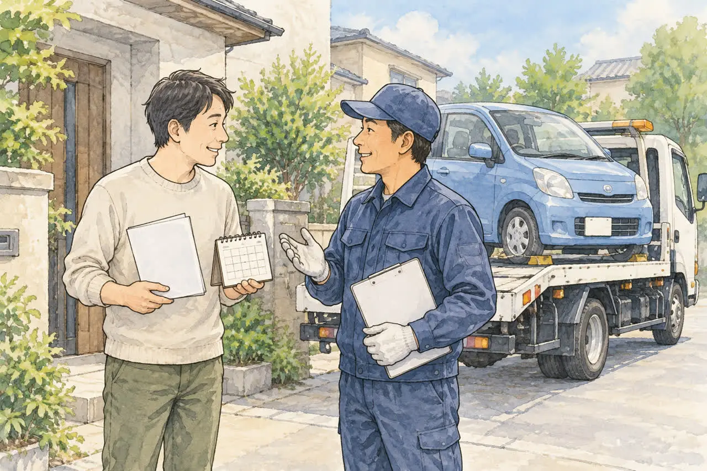

廃車の日数が気になる方へ
廃車手続きはどれくらいで終わる？
日数の目安と、早く終わらせるコツ
公開
こんにちは、東京都足立区江北で自動車解体・廃車買取をしている「大崎商店 環七店」です。
「廃車にしたいけれど、手続きが終わるまで何日かかる？」
「来月から駐車場を解約するので、それまでに終わらせたい」
「車が手元からなくなったあと、いつ手続きが終わるの？」
廃車のご相談では、こんな「日数」についての質問を、よくいただきます。
結論からお伝えすると、廃車手続きにかかる日数は、どの手続きにするか、書類がそろっているか、運輸支局の受付日に当たるかで変わります。「何日」と一律には言えませんが、日数を決める要素がわかれば、見通しを立てやすくなります。
この記事では、廃車手続きにかかる日数の考え方と、早く終わらせるコツを、やさしくご紹介します。後半では、足立区の大崎商店の場合もご紹介します。
① 廃車の手続きには、2つの種類があります
ここでは普通車の代表的な手続きである、一時抹消登録と永久抹消登録を比べます。日数が大きく変わるのは、この違いが理由です。
| 比較項目 | 一時抹消登録 | 永久抹消登録 |
|---|---|---|
| 目的 | 車の使用を一時中止する | 解体した車の登録を抹消する |
| 解体の必要性 | 解体前でも申請できる | 解体と解体報告が必要 |
| 申請時期 | 必要書類・条件が整ったあと | 必要書類がそろい、解体報告が済んだあと |
| 日数に関わること | 書類の準備・申請予定・受付日 | 左記に加え、解体作業・解体報告 |
永久抹消登録の申請には、解体報告記録がなされた日と、移動報告番号の記載が必要です。移動報告番号は、リサイクル券などで確認する番号で、解体後に新しく発行される番号ではありません。そのため、解体が終わって、報告が済んだあとでないと、申請できません。
なお、先に一時抹消した車を解体した場合は、永久抹消登録ではなく「解体届出」を行います。軽自動車では、一時使用中止は「自動車検査証返納届」、解体後は「解体返納」または返納済みの場合の「解体届出」となり、普通車とは名称や必要書類が異なります。
一時抹消と永久抹消の違いを、くわしく知りたい方は、「「一時抹消」と「永久抹消」の違いをやさしく解説｜廃車はどちらを選ぶ？」の記事をご覧ください。
② 日数を決める4つの要素
廃車手続きにかかる日数は、主に次の4つで変わります。
- 書類がそろう日：車検証、ナンバープレート、印鑑証明書など。書類がそろわないと、申請できません
- 解体の作業（永久抹消の場合）：車を解体して、報告が済むまでの日数です
- 運輸支局の受付日と時間：この記事で紹介する窓口申請では、受付時間内に書類を提出します。依頼先がいつ申請する予定かも確認しましょう
- 土日・祝日・年末年始：窓口がお休みの期間は、日数が延びます
窓口申請の受付は、平日の日中です
廃車（抹消登録）は、車検証に記載されている使用の本拠の位置を管轄する、運輸支局や自動車検査登録事務所（軽自動車は、軽自動車検査協会）に申請します。
東京都足立区の例では、受付時間は、次のとおりです。
| 確認項目 | 普通車 | 軽自動車 |
|---|---|---|
| 窓口 | 足立自動車検査登録事務所 | 軽自動車検査協会 東京主管事務所 足立支所 |
| 受付時間 | 8:45〜11:45、13:00〜16:00 | 8:45〜11:45、13:00〜16:00 |
| お休み | 土曜・日曜・祝日・12/29〜1/3 | 土曜・日曜・祝日・12/29〜1/3 |
※受付時間や休業日は、変わることがあります。お出かけ前に、各窓口の案内をご確認ください。
受付が16時までのため、午後に書類がそろうと、手続きは翌日以降になることがあります。 祝日が続くときは、さらに日数が延びます。
足立区の窓口の場所や、都税と区の税の違いは、「足立区で廃車するなら知っておきたいこと｜手続きの場所と、引き取りの流れ」の記事をご覧ください。
③ 日数が延びやすいケース
次のような場合は、書類の準備に時間がかかり、日数が延びやすくなります。
- 車検証を、なくしている：再交付や、理由書などの対応が必要になることがあります。くわしくは車検証をなくしたけど廃車できる？の記事をご覧ください
- 車検証と今の住所・氏名が違う：住民票や戸籍の附票などを、取り寄せる必要があります。くわしくは車検証と今の住所・名前が違う場合の廃車手続きの記事をご覧ください
- 所有者がローン会社・販売店：所有権解除の書類を待つ必要があります。くわしくはローンが残っている車は廃車できる？の記事をご覧ください
- 所有者が亡くなっている：相続の手続きや書類が必要です。くわしくは亡くなった家族の車を廃車するときの手続きの記事をご覧ください
- ナンバープレートが、ない・外せない：紛失の場合は理由書など、外せない場合は取り外し方法や時期の相談が必要になります
- 印鑑証明書の期限が切れた：普通車の抹消登録の申請日に発行から3か月を超える場合は、取り直しが必要です。くわしくは廃車に必要な印鑑証明書は何通？いつまでのものが使える？の記事をご覧ください
リサイクル券（リサイクル料金を預託した証明）が見つからなくても、廃車はできます。預託状況を確認して、代わりにできます。くわしくは、「リサイクル券をなくしたら？廃車できる？預託状況の確認方法と、代わりの書類」の記事をご覧ください。
④ 日数を短くする、5つのコツ
- 車検証と、ナンバープレートの有無を、先に確認する：まず、手元にあるかどうかを見ます
- 所有者を確認する：車検証の「所有者」が、ご自身か、ローン会社か、亡くなった方かで、準備が変わります
- 住所・氏名が違うときは、書類を取る前に、依頼先に確認する：違う書類を取ってしまうと、取り直しの時間がかかります
- 印鑑証明書は、手続きの時期が決まってから取る：早く取りすぎると、期限が切れることがあります
- 依頼先に、「申請の予定日」と「必要な書類」を、先に聞く：書類の準備と、受付日を、そろえて動けます
「いつまでに終わらせたい」という希望がある場合は、最初のご相談のときに、期限をお伝えください。 間に合うかどうか、見通しを確認できます。
⑤ 手続きが終わったあとのこと
廃車（抹消登録）の手続きが終わったあとも、次のようなお金や手続きが続くことがあります。
- 自動車税（普通車）：抹消登録をした月の、翌月から3月までの分が、還付の対象になります。東京都では、還付が発生すると通知が届きます
- 重量税の還付：条件を満たす場合、永久抹消登録や解体届出などと同時に還付申請します。抹消後に単独で申請すればよいものではありません。国税庁の案内では、申請から支払いまでおおむね2か月半が目安です
- 自賠責保険の返戻金：廃車だけでは自動的に解約されません。保険会社への解約手続きが必要で、返戻金の有無や支払時期は契約・解約日などによって異なります
- 任意保険：乗り換える場合の車両入替、解約、中断証明書を利用するかなどを保険会社に相談します
くわしくは廃車にするとお金は戻ってくる？自動車税・重量税・自賠責の還付金と、事故を起こしたときの保険の使い方の記事をご覧ください。
よくある質問
Q. 廃車手続きは、何日で終わりますか？
A. 手続きの種類（一時抹消か永久抹消か）、書類がそろっているか、窓口の受付日に当たるか、で変わります。一律の日数はありません。依頼先に、申請の予定日を確認してください。
Q. 一時抹消と永久抹消では、どちらが早く終わりますか？
A. 一時抹消は、解体を待たずに申請できるので、書類がそろえば早く進められます。永久抹消は、解体と解体報告が済んでからの申請になるため、解体の作業状況によって日数が変わります。
Q. 土日や祝日でも、手続きは進みますか？
A. 運輸支局や軽自動車検査協会の窓口は、土日・祝日・年末年始がお休みです。申請できるのは平日の日中なので、休みを挟むと、日数が延びます。
Q. 午後に書類がそろいました。その日に終わりますか？
A. 窓口の受付は16時までです。午後に書類がそろった場合は、翌日以降になることがあります。
Q. 来月から駐車場を解約するので、それまでに終わらせたいです。
A. 駐車場を空けるための「車の引き取り日」と、「抹消登録が終わる日」は別です。まず依頼先へ、駐車場を空けたい日を伝え、引き取り予定を確認してください。駐車場の解約条件は管理会社にも確認しましょう。
Q. 車を引き取ってもらえば、すぐに自動車税は止まりますか？
A. 税の扱いは、車を引き取った日ではなく、抹消登録をした月で決まります。年度末など、期限がある場合は、早めに依頼先へ相談してください。
大崎商店の場合：手続きの日数

ここからは、足立区の大崎商店の場合をご紹介します。
一時抹消：原則1週間以内
当店では、一時抹消だけのご依頼はお受けしていません。車を処分されるお客様の手続きとして、先に一時抹消を行う場合は、書類がそろっていれば、引き取りから原則1週間以内に対応します。早い場合は、当日か翌日です。
- 運輸支局の受付が16時までのため、午後の引き取りは、翌日以降の手続きになることがあります
- 土日・祝日を挟む場合、とくに祝日が続くときは、1週間以内をお約束できないことがあります
- 環七店から、普通車の運輸支局（足立自動車検査登録事務所）までは車で約20分、軽自動車の窓口（軽自動車検査協会 足立支所）までは約15分の場所にあります（目安）
永久抹消：解体の状況によります
永久抹消は、車を解体してからの手続きです。解体は、解体の認可を受けた入谷店で行います。入谷店の作業の状況によって、日数が変わります。 ご相談のときに、見通しをご案内します。税金を止めたいとき、自賠責の返戻金を無駄にしたくないとき、すぐに解体できないときは、先にナンバーを返納して一時抹消（軽自動車は一時使用中止）を行うことが多くあります。
一時抹消の完了と、その後の解体・解体届出の完了は別の段階です。必要な手続きがどこまで終わったか、確認書類の受け取り方法もご相談ください。
ご相談のときに
次の内容を、お電話でお伝えください。
- 車検証（または自動車検査証記録事項）の内容
- 車種・車の状態・車が置いてある場所
- 「いつまでに終わらせたい」という、ご希望の期限
大崎商店では、
- 廃車手続きの代行・解体の費用は無料
- 買取価格がつかない車も、環七店から片道約30分圏内は引き取り無料
- 買取価格がつく車は、圏外でも、所在地と車の状態によっては無料で引き取り（事前にご案内します）
- 車のお持ち込みは、どこからでも歓迎（基本は環七店。日時は、事前にお電話でご相談ください）
廃車手続きの日数のことも、大崎商店にご相談ください
電話で相談する 03-3854-4141メールで相談する（フォーム）ご来店の前に、お電話ください。引き取りなどで外出していることもあり、お電話いただければ、受け入れの可否や、ご案内できる日時をお伝えできます。
大崎商店 環七店
電話：03-3854-4141
〒123-0872
東京都足立区江北7丁目1−3
営業時間：月〜土 10:00〜18:00
休業日：日曜・祝日
環七沿い／舎人ライナー
西新井大師西駅
大崎商店 入谷店
電話：03-3899-2837
〒121-0836
東京都足立区入谷7丁目5−11
営業時間：月〜土 9:30〜17:30
休業日：日曜・祝日・第2土曜
引き取りやご相談のお電話は、環七店がスムーズです。お電話の際は、「廃車の手続きの日数について」とお伝えください。車検証（または自動車検査証記録事項）をお手元にご用意いただくと、ご案内がスムーズです。
※掲載のイラストはAIで作成したイメージです。実際の店舗・役所の窓口を撮影したものではありません。
参考：国税庁・自動車重量税の廃車還付制度／軽自動車検査協会・解体返納／国土交通省・車を一時使用中止・解体・輸出するためには／国土交通省 東北運輸局・永久抹消登録／関東運輸局 東京運輸支局・自動車の検査（車検）・登録／軽自動車検査協会・東京主管事務所足立支所